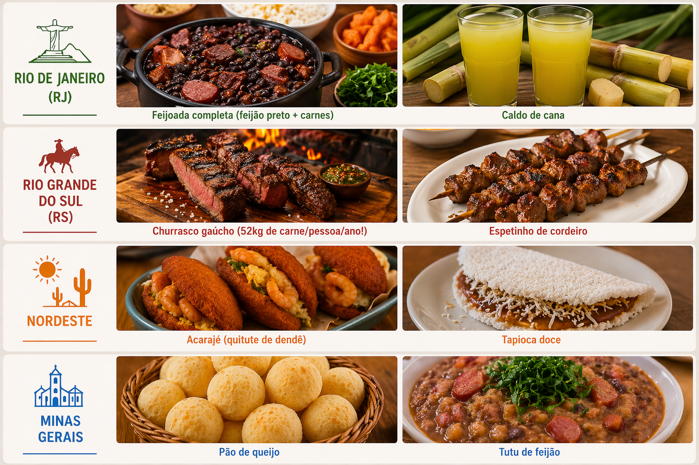

🍽️ Sabores do Brasil
O Brasil tem uma culinária única no mundo, misturando sabores indígenas, africanos e portugueses. De pratos quentes do sul a quitutes tropicais do nordeste, cada região é um festival de gostos!
🔥 Pratos Icônicos por Região:

Curiosidades Gastronômicas:
• Brasil é o 2º maior produtor de café do mundo.
• Possui uma das culinárias mais diversas do mundo , influenciada por culturas indígenas, africanas e europeias. Cada região do país tem pratos típicos bem diferentes, por causa do clima e dos ingredientes locais. O arroz com feijão, presente no dia a dia dos brasileiros, é considerado uma combinação nutricional completa.
🌵 Nordeste
• O azeite de dendê, muito usado na Bahia, tem origem africana e dá sabor marcante aos pratos. O acarajé é considerado patrimônio cultural do Brasil. Muitas receitas utilizam frutos do mar frescos por causa do litoral extenso.
☕ Minas Gerais
• Minas é famosa pela comida “caseira” e feita no fogão a lenha. O pão de queijo é conhecido internacionalmente. A culinária mineira valoriza ingredientes simples, mas muito saborosos.
🧉 Rio de Janeiro
• A feijoada se popularizou no Rio de Janeiro e virou um dos pratos mais conhecidos do Brasil. É comum encontrar bares tradicionais servindo pratos típicos e petiscos. O mate gelado com limão é uma bebida muito consumida nas praias.
🥩 Rio Grande do Sul
• O churrasco gaúcho é uma tradição cultural forte e muito valorizada. O consumo de carne no estado é um dos maiores do país. O chimarrão é uma bebida típica consumida diariamente pelos gaúchos.